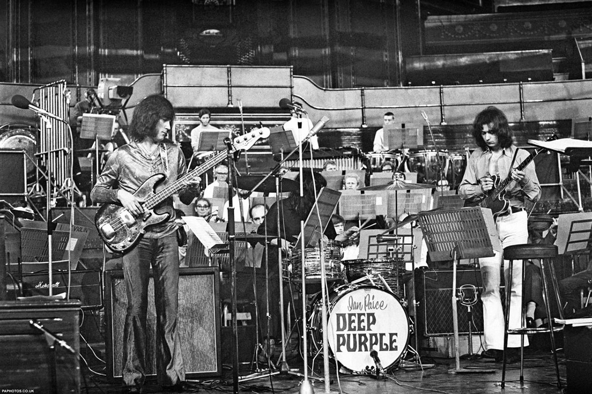

Яндекс.Музыка
Слушайте полный каталог Deep Purple на Яндекс.Музыке.
Перейти на Яндекс.МузыкуПогрузитесь в легендарное звучание Deep Purple. От классических хитов до новейших релизов – их музыка продолжает вдохновлять поклонников по всему миру.
Слушайте полный каталог Deep Purple на Яндекс.Музыке.
Перейти на Яндекс.МузыкуНайдите хиты Deep Purple в Spotify, формируйте плейлисты и делитесь ими с друзьями.
Перейти в SpotifyЗа свою многолетнюю карьеру Deep Purple выпустили десятки альбомов, каждый из которых отражает определённый этап развития группы и эволюцию её звучания.
| Альбом | Год | Примечательные композиции |
|---|---|---|
| Deep Purple (III) | 1969 | "April", "The Painter" |
| In Rock | 1970 | "Speed King", "Child in Time" |
| Machine Head | 1972 | "Smoke on the Water", "Highway Star" |
| Burn | 1974 | "Burn", "Mistreated" |
| Perfect Strangers | 1984 | "Perfect Strangers", "Knocking at Your Back Door" |
| Rapture of the Deep | 2005 | "Rapture of the Deep", "Wrong Man" |
| Infinite | 2017 | "Time for Bedlam", "The Surprising" |
| Whoosh! | 2020 | "Throw My Bones", "Nothing at All" |